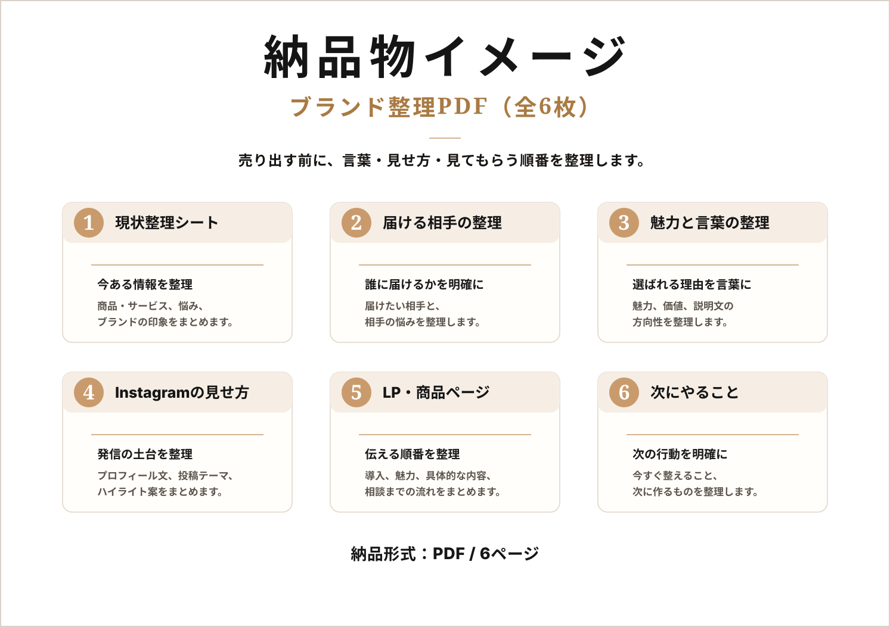

ブランドの方向性
誰に届けるブランドなのか、どんな魅力を持つのかを整理します。
売り出す前のミニ設計サービス
はじめてブランドを立ち上げる人へ。
売り出す前に必要な、言葉・見せ方・導線の土台を整えます。
Instagram、LP、商品ページで迷わず伝えられるように、誰に届けるのか、どんな魅力を伝えるのか、何から始めるべきかを一緒に整理します。
商品やサービスが完成する前の段階でも相談できます。
Before launch
About
小さなブランドづくりデスクは、これから商品やサービスを売り出したい個人・小規模ブランド向けに、ブランドの言葉・見せ方・導線（見てもらう順番）を整理するミニ設計サービスです。
単なるSNS運用代行やデザイン制作ではなく、Instagram、LP、商品ページ、ショップページなどで迷わず伝えられる状態をつくるために、「誰に届けるのか」「どんな魅力を伝えるのか」「どんな言葉と見せ方にするのか」「どの順番で見てもらうのか」を整理します。
ブランド名や商品内容がまだ整理できていなくても大丈夫です。なんとなく投稿や商品ページを作り始める前に、何から始めるべきか一緒に確認し、次に動きやすい形に整えます。
What we organize
誰に届けるブランドなのか、どんな魅力を持つのかを整理します。
InstagramやLPで使う言葉、ブランドらしい表現の方向性を整えます。
投稿、商品写真、LP、ショップページで何を見せるべきかを整理します。
InstagramからLP、商品ページ、問い合わせまでの見てもらう順番を整えます。
売り出す前に何から着手すべきかを優先順位で整理します。
First plan
初回プラン
33,000円（税込）〜
まずは小さく方向性を整理したい方向けの初回プランです。
制作物をいきなり作るのではなく、
Instagram・LP・商品ページに展開しやすい状態まで整理します。
ブランド名・Instagram・LP・商品ページを作り始める前に、
方向性を整理しておくことで、制作のやり直しや発信の迷いを減らします。
※内容やご相談範囲により金額が変わる場合があります。
Deliverable
ブランド整理PDF 5〜8枚として、言葉・見せ方・導線（見てもらう順番）を1つの資料にまとめます。
納品後に、そのままInstagramプロフィール文・投稿テーマ・LP構成・商品ページの説明文に使いやすい形で整理します。

言葉・見せ方・見てもらう順番を1つの資料に整理
Difference
投稿をお願いする前に、まず何を投稿するべきかを整理します。
ロゴやLPを作る前に、何を伝えるべきかを整理します。
大きな予算をかける前に、小さく方向性を整えます。
Clarity
ブランドを始める前に迷いやすいポイントを、Instagram・LP・商品ページに使いやすい形で整理します。
ブランドを届けたい相手を整理します。
商品の特徴だけでなく、選ばれる理由を言葉にします。
投稿テーマやプロフィールで伝える内容を整理します。
ページを見る人が迷わないように、伝える順番を整理します。
次にやるべきことを優先順位でまとめます。
Flow
まずは現在の状況や悩みを簡単に共有してください。まだ整理できていなくても大丈夫です。
Instagram、商品情報、LP、ショップページ、参考イメージなど、今あるものを確認します。
30分〜60分ほど、ブランドの方向性や何から始めるべきかを整理します。
言葉・見せ方・導線（見てもらう順番）・次のアクションをPDFで納品します。
FAQ
はい、可能です。商品やサービスを売り出す前の段階でも、方向性や見せ方を整理できます。
はい、可能です。ブランド名やロゴが決まる前に、誰に何を届けるのかを整理することで、その後の制作が進めやすくなります。
初回プランでは整理資料の作成が中心です。必要に応じて、LP構成、Instagram投稿案、商品ページ構成などの追加相談も可能です。
投稿代行ではなく、投稿やLPを作る前に必要なブランドの言葉・見せ方・導線（見てもらう順番）を整理するサービスです。
ネットショップ、美容、アパレル、雑貨、ハンドメイド、サロン、スクール、個人ブランドなどに向いています。
まだ整理できていなくても大丈夫です。Instagramアカウント、商品情報、参考にしているブランド、現在の悩みなどがあればスムーズです。
初回の「売り出す前のブランド整理プラン」は33,000円（税込）〜です。ご相談内容や整理する範囲によって変動する場合があります。
はい、まずはInstagram DMまたはメールで現在の状況を簡単に共有いただければ大丈夫です。
Start small
Instagram、LP、商品ページで何を伝えるべきか迷っている段階でも大丈夫です。まずは現在の状況をもとに、整理できそうなポイントから一緒に確認します。